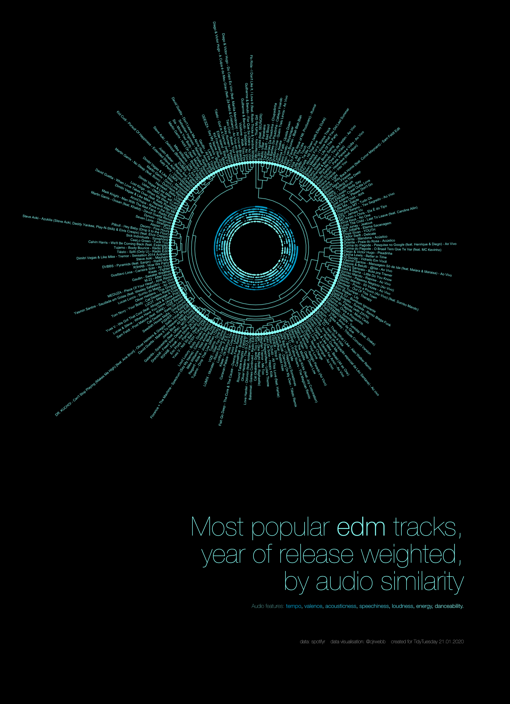
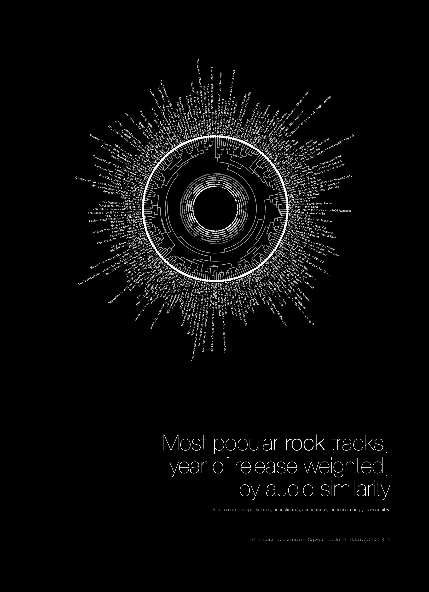
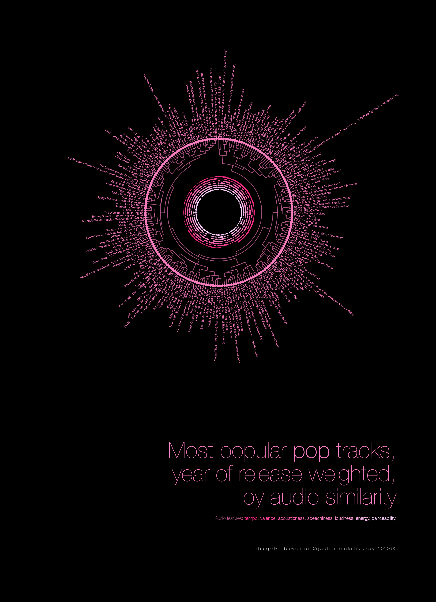
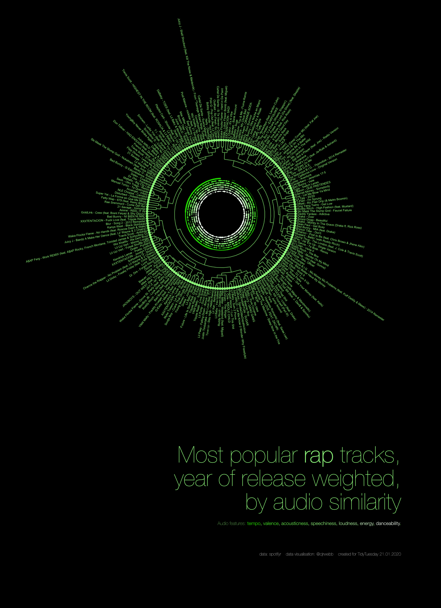
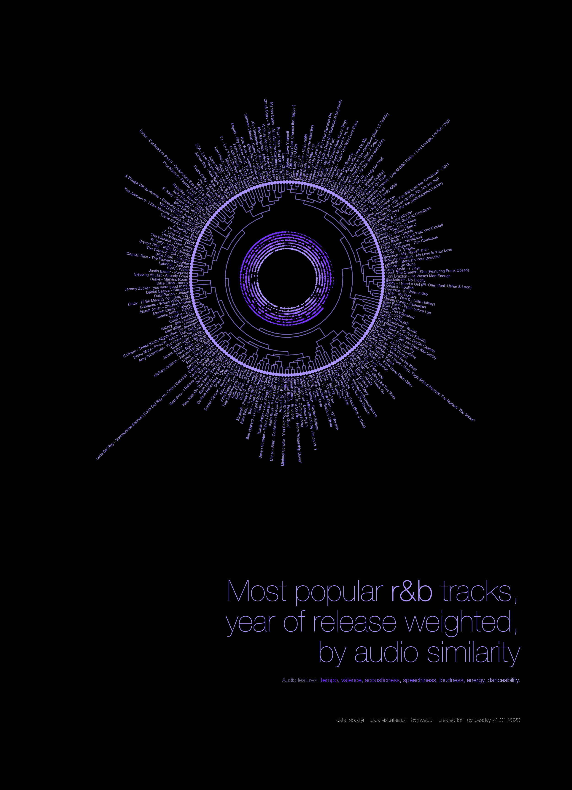
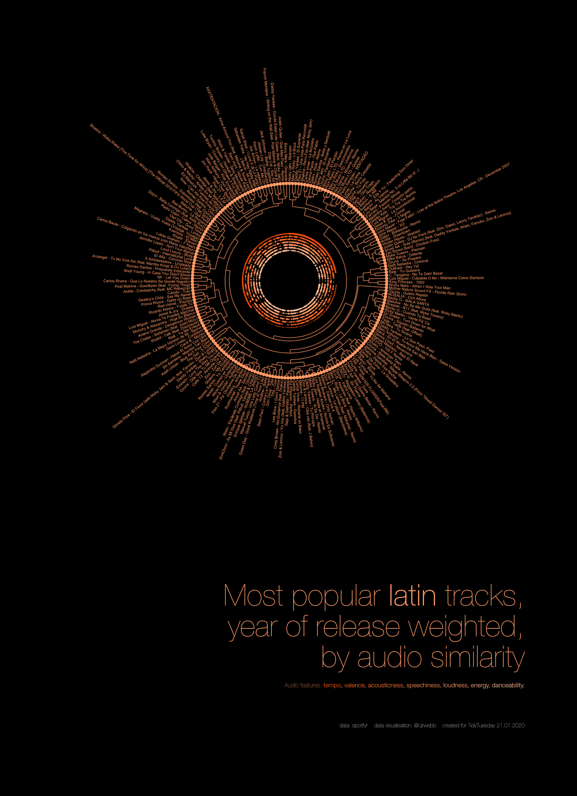
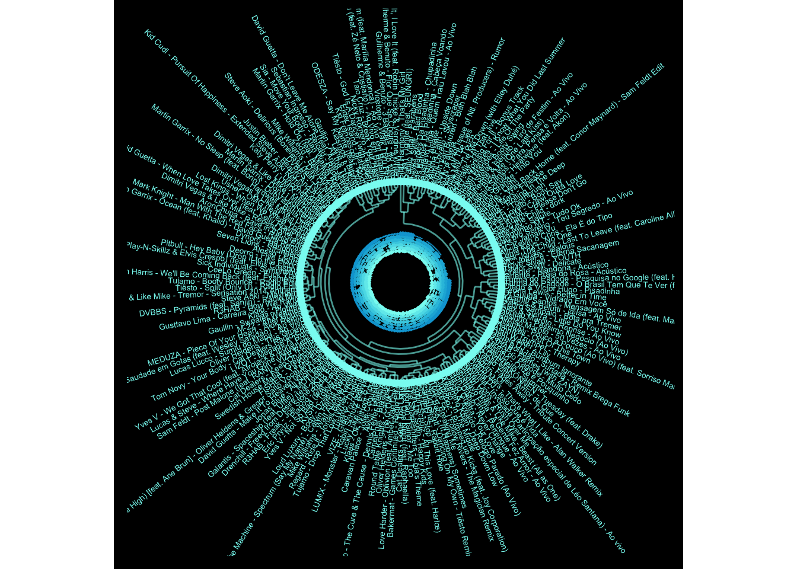

Calum Webb
Sociologist.
Tidy Tuesday 21/01/2020: Spotifyr. Hierarchical clusters of popular songs by audio features

Playlist: https://open.spotify.com/playlist/3kPYr4522CKURLg4ePkuz1?si=3Yx-APApQL2s4KsvFFskAQ

Playlist: https://open.spotify.com/playlist/18qGN481uKhPCbBy0UHz1i?si=l5jqQlb0R5WD8HYv9UVIlA

Playlist: https://open.spotify.com/playlist/4ChD4YncnVzSK7E8Z8wn3W?si=JCJUSe55TNGREQ1q0QF9CQ

Playlist: https://open.spotify.com/playlist/2kdfe1C6wSRkNxhrEyIVOP?si=QRJbJofnRUyvib-_U4GSvA

Playlist: https://open.spotify.com/playlist/3FnznOoaA2lnDr7wIT0j5Q?si=lgcYDNeDSau2nnP0_ID92w

Playlist: https://open.spotify.com/playlist/7nwVFzZ67qgu1VddrbpQ5K?si=cWn4yU4pRj-k8H37icWRog
Playlists created using spotipy.
This was my attempt at creating an appealing (although maybe not super informative) visualisation of popular songs from the Spotify data in this week’s Tidy Tuesday.
If I was using my statistical routes, I would just describe this as a dendrogram with polar coordinates showing the results from a hierarchical cluster analysis based on several audio features: danceability, energy, loudness, speechiness, acousticness, instrumentalness, liveness, valence, and tempo. The descriptions of each can be found in the link above.
If I was trying to market myself and the visualisation better I would say something incorrect but eyecatching like: Using AI to Choose Perfect Pairings of Songs.
Describing the visualisation
The visualisation above is made of two parts: a polar coordinates scatterplot showing the relative high and low features of each song in terms of its tempo, valence, acousticness, speechiness, loudness, energy, and danceability (from the outermost to the innermost circle). That means that, for example, songs with large diamonds on the outermost circle have the highest tempos, songs with small or no diamonds have the lowest. Songs with larger diamonds in the next circle inwards are relatively happier or cheerful. And so on.
The second part of the visualisation is the ‘tree branches’ that go from the outside in. At the lowest level, each one of these branches (the twigs) is linked to only this song. The two songs with the most similar audio features are then linked together in the next branch up, and then these pairs are linked to the next song or pair of songs. This continues until all of the songs are linked.
This type of graph is called a dendrogram, and we usually see them in evolutionary biology. For example, below is a dendrogram from the Institute of Canine Biology showing the similarities between different dog breeds.

Code for creating data visualisation
Rather than breaking down each part of the code below I’m just going to outline the reasons behind each part:
First I read in the data and remove the duplicates using a combination of track name and artist. Then I filter out the genre that I want to create the visualisation for. The real upper limit for a plot like this is around 200 data points, especially when song names are long. Lastly I create a new variable that takes the track year from the album release date (it extracts the first four characters of the string and makes the result a numeric type column)
Next, I found from playing around that the popularity skewed way too heavily towards more recent releases. To try and remedy this a little I used a linear model with release year included as a set of dummy predictors, with 2019 as the reference year. I use
broomto tidy up the results of this model and then get the track years back from thetermcolumn to use for a join later on. I then subtract those coefficients to rebalance the popularity by adjusting for the average drop in popularity in years past. I find this gives a much better view of “most popular, timeless” songs that makes be feel less old. Finally, I rank the tracks and keep only the top 200 - I accept any of the ties as well so it’s sometimes more or less than 200.Next we create a data frame that can be used to calculate a distance matrix, calculate said matrix, and run a hierarchical cluster analysis. We then extract the clusters and get them in a format that can be handled by ggplot using the amazing
ggdenropackage.Next there is a bunch of fiddly stuff to get the angles on the text labels correct and to specify a nice neon colour palette for the feature plotting. I also need to set constants to put the feature rings in the right place on the plot (which required going back to the axis scale a few times).
Last fiddly things are to set quantiles for each of the audio feature variables and add an empty row and point to stop the overlap that seems to often happen at the start and end of the plot (both at 12’o clock). This makes the variation more visible (you’ll see I also experimented with just scaling the variable, but the differences are too obscured at such a small size).
Finally we can plot the data. Note the important polar coordinates and reverse y scale arguments. Also note that I’ve set a very small limit for the amount that size is allowed to fluctuate (for the audio feature rings). The largest feature data points still need to be quite small to look nice and be informative.
The full code for the EDM visualisation is below: you can change what genre is visualised by just changing the filter conditions at the start of the code chunk.
# Script v2 extended and with year of release weighting
library(tidyverse)
library(ggdendro)
library(extrafont)
library(broom)
library(mltools)
# data
spotify_songs <- readr::read_csv('https://raw.githubusercontent.com/rfordatascience/tidytuesday/master/data/2020/2020-01-21/spotify_songs.csv')
unique(spotify_songs$playlist_genre)## [1] "pop" "rap" "rock" "latin" "r&b" "edm"spotify_songs## # A tibble: 32,833 x 23
## track_id track_name track_artist track_popularity track_album_id
## <chr> <chr> <chr> <dbl> <chr>
## 1 6f807x0… I Don't C… Ed Sheeran 66 2oCs0DGTsRO98…
## 2 0r7CVbZ… Memories … Maroon 5 67 63rPSO264uRjW…
## 3 1z1Hg7V… All the T… Zara Larsson 70 1HoSmj2eLcsrR…
## 4 75Fpbth… Call You … The Chainsm… 60 1nqYsOef1yKKu…
## 5 1e8PAfc… Someone Y… Lewis Capal… 69 7m7vv9wlQ4i0L…
## 6 7fvUMiy… Beautiful… Ed Sheeran 67 2yiy9cd2QktrN…
## 7 2OAylPU… Never Rea… Katy Perry 62 7INHYSeusaFly…
## 8 6b1RNvA… Post Malo… Sam Feldt 69 6703SRPsLkS4b…
## 9 7bF6tCO… Tough Lov… Avicii 68 7CvAfGvq4RlIw…
## 10 1IXGILk… If I Can'… Shawn Mendes 67 4QxzbfSsVryEQ…
## # … with 32,823 more rows, and 18 more variables: track_album_name <chr>,
## # track_album_release_date <chr>, playlist_name <chr>, playlist_id <chr>,
## # playlist_genre <chr>, playlist_subgenre <chr>, danceability <dbl>,
## # energy <dbl>, key <dbl>, loudness <dbl>, mode <dbl>, speechiness <dbl>,
## # acousticness <dbl>, instrumentalness <dbl>, liveness <dbl>, valence <dbl>,
## # tempo <dbl>, duration_ms <dbl># Filter out duplicates and select genre, extract year, remove zero popularity songs
spotify_songs <- spotify_songs %>%
filter(!duplicated(paste(track_name, " - ", track_artist))) %>%
filter(playlist_genre == "edm" & track_popularity > 0) %>%
mutate(
track_year = as.numeric(str_extract(track_album_release_date, "^.{4}"))
)
# Weight track popularity by year of release using linear model
edm_model <- lm(data = spotify_songs,
formula = track_popularity ~ I(relevel(as.factor(track_year), ref = "2019")))
edm_model <- tidy(edm_model) %>%
mutate(
year = ifelse(str_detect(term, "Intercept"), 2019, as.numeric(str_sub(term, -4, -1))),
year_weight = ifelse(str_detect(term, "Intercept"), estimate, estimate)
)## Warning in ifelse(str_detect(term, "Intercept"), 2019,
## as.numeric(str_sub(term, : NAs introduced by coercionspotify_songs <- left_join(spotify_songs, edm_model %>% select(year, year_weight),
by = c("track_year" = "year")) %>%
mutate(
weighted_popularity = ifelse(track_year != 2019,
track_popularity - year_weight,
track_popularity)
)
# Filter the top 200ish songs by year of release weighted popularity
spotify_songs <- spotify_songs %>%
mutate(track_rank = rank(-weighted_popularity)) %>%
filter(track_rank < 200)
# Create distance matrix based on danceability, energy, loudness, mode, speechiness, acousticness
# instrumentalness, liveness, valence and tempo
spotify_songs_distdata <- as.data.frame(spotify_songs)
rownames(spotify_songs_distdata) <- paste0(spotify_songs_distdata$track_artist, " - ", spotify_songs_distdata$track_name)
# Filter out only variables to predict on
spotify_songs_distdata <- spotify_songs_distdata %>%
select(danceability, energy, loudness, mode, speechiness,
acousticness, instrumentalness, liveness, valence,
tempo)
# Distance matrix
dist_spotify <- dist(spotify_songs_distdata)
# Hierarchical cluster
clusters_spotify <- hclust(dist_spotify)
clusters_data <- as.dendrogram(clusters_spotify)
# Dendro data conversion for plotting with ggdendro
clusters_data_ggd <- dendro_data(clusters_data, type = "rectangle")
seg_data <- segment(clusters_data_ggd)
# Calculate angles and orientation for label placement
number_of_bar <- nrow(clusters_data_ggd$labels)
angle <- 90 - 360 * (as.numeric(rownames(clusters_data_ggd$labels)) - 0.5) / number_of_bar
clusters_data_ggd$labels$hjust <- ifelse( angle < -90, 1, 0)
clusters_data_ggd$labels$angle <- ifelse(angle < -90, angle+180, angle)
# Add layers with data on other variables
label_data <- as_tibble(clusters_data_ggd$labels)
label_data <- label_data %>% mutate(
danceability_y = 8, # most inner
energy_y = 7.66,
loudness_y = 7.33,
speechiness_y = 7,
acousticness_y = 6.66,
valence_y = 6.33,
tempo_y = 6 # most outer
)
# edm colour scheme:
edm_col_scheme <- colorRampPalette(c("#00A6D7", "#86FAF2"))(7)
label_data <- left_join(label_data, as_tibble(spotify_songs_distdata, rownames = "label"), by = "label") %>%
mutate_at(vars(danceability:tempo), scale) %>%
mutate_at(vars(danceability:tempo), ~ntile(., 10))## Warning: Column `label` joining factor and character vector, coercing into
## character vector# Add a dummy empty row for space at the top of the plot to avoid label clash
endpoint_data <- as.tibble(seg_data %>% filter(yend == 0)) %>% add_row(yend = 0, x = max(seg_data$x) + 1)## Warning: `as.tibble()` is deprecated, use `as_tibble()` (but mind the new semantics).
## This warning is displayed once per session.clusters_data_ggd$labels <- clusters_data_ggd$labels %>% add_row(label = "", x = max(clusters_data_ggd$labels$x) + 1, y = 0, hjust = 0, angle = 90)
# Plot circular dendrogram with acoustic features in centre for most edmular 200 release year weighted
# edm songs
edm_plot <- ggplot(seg_data) +
geom_segment(aes(x = x, y = log(y+1), xend = xend, yend = log(yend+1)),
alpha = 0.6,
col = edm_col_scheme[7]) +
geom_point(data = endpoint_data,
aes(x = x, y = log(yend+1)),
col = edm_col_scheme[7]) +
geom_text(data = clusters_data_ggd$labels,
aes(x=x, y= log(y+1) - 0.3, label = label, hjust = hjust),
size = 1.8,
angle = clusters_data_ggd$labels$angle, inherit.aes = FALSE,
col = edm_col_scheme[7]) +
# feature layers ordered from inner to outer
geom_point(data = label_data,
aes(x = x, y = speechiness_y, size = speechiness),
col = edm_col_scheme[4], stroke = 0, alpha = 0.99, shape = 18) +
geom_point(data = label_data,
aes(x = x, y = loudness_y, size = loudness),
col = edm_col_scheme[5], stroke = 0, alpha = 0.99, shape = 18) +
geom_point(data = label_data,
aes(x = x, y = acousticness_y, size = acousticness),
col = edm_col_scheme[3], stroke = 0, alpha = 0.99, shape = 18) +
geom_point(data = label_data,
aes(x = x, y = energy_y, size = energy),
col = edm_col_scheme[6], stroke = 0, alpha = 0.99, shape = 18) +
geom_point(data = label_data,
aes(x = x, y = valence_y, size = valence),
col = edm_col_scheme[2], stroke = 0, alpha = 0.99, shape = 18) +
geom_point(data = label_data,
aes(x = x, y = danceability_y, size = danceability),
col = edm_col_scheme[7], stroke = 0, alpha = 0.99, shape = 18) +
geom_point(data = label_data,
aes(x = x, y = tempo_y, size = tempo),
col = edm_col_scheme[1], stroke = 0, alpha = 0.99, shape = 18) +
# annotate("text", x = 0, y = 8, label = "edm", col = "#FE1D6B", size = 12,
# alpha = 1, vjust = 1.5) +
coord_polar(start = 0) +
scale_y_reverse(limits = c(8, -10),
expand = c(0.2, 0)) +
scale_size(range = c(0.1, 1.5)) +
theme_minimal() +
theme(
axis.text = element_blank(),
axis.title = element_blank(),
panel.grid = element_blank(),
plot.background = element_rect(color = "black", fill = "black"),
panel.background = element_rect(fill = "black", color = NA),
text = element_text(family = "Helvetica"),
legend.position = "none"
)
edm_plot
# # - not run
# # Save plot
# ggsave("edm_dendro.tiff", dpi = "retina", width = 10, height = 10, units = "in")
# ggsave("edm_dendro.png", dpi = "retina", width = 10, height = 10, units = "in")